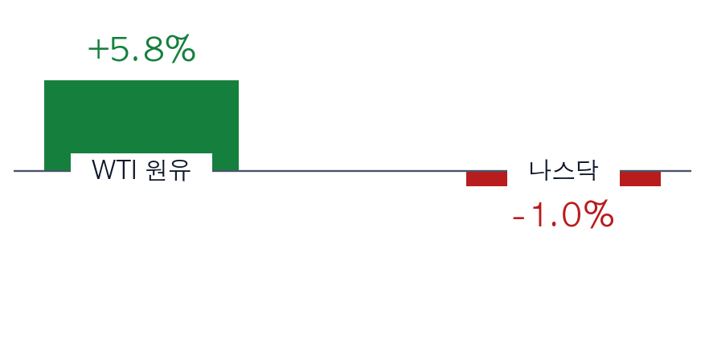
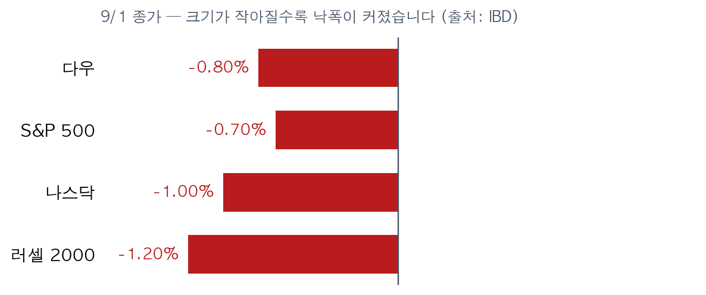
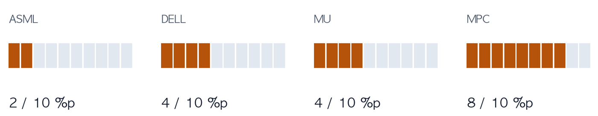

ZekiRex™ US Briefing — September 2, 2026 WSJ print edition of 9/2 + IBD · US session intraday · simulated portfolio EXECUTIVE TAKEAWAY | Market posture — $90 oil pushed yields, and yields are the WSJ front page. IBD exposure and distribution days could not be confirmed today (not estimated). | | Core thesis — Tuesday was not an earnings accident. It was a discount-rate accident. Today's bounce does not remove the cause while crude sits at $90. | | Immediate execution — No new positions. ASML sits 2.6% above its stop, the first name that will demand an answer this week. |
|
The question — did yields rise, or did oil push them? The front page of the September 2 Journal leads on soaring government bond yields worldwide, and frames the consequence as borrowing costs for home buyers, card holders and above all governments (WSJ 9/2, A1). The G-20 finance ministers closed their meeting inside that selloff, amid tariff spats and public insults. What arrived after the paper closed narrows the cause. At Tuesday's close IBD counted the Dow −0.8%, the S&P 500 −0.7%, the Nasdaq −1.0% and the Russell 2000 −1.2%, on a day WTI rose 5.8% to $90.90 and Brent gained more than 5% to $95.35. The 10-year added 3 basis points to 4.79%, its highest since January 2025 — immediately after US strikes on Iran over the Strait of Hormuz.  Crude up, equities down. Not fear — a supply shock reaching equities through the rate channel. (Tuesday's close, source: IBD)  The same session, graded by size: the smaller the index, the worse the loss. The Russell fell hardest because it is the most rate-sensitive. What changed after the paper closed — today is taking some of it back By midday Wednesday in New York the Dow was +0.7%, the Russell 2000 +0.9%, the S&P 500 +0.5% and the Nasdaq +0.5%, trying to end a three-session slide. But crude has not come down — WTI $90.75, the 10-year 4.80%. The market is rising with the cause still in place, helped by weaker-than-expected jobs data steadying the yield (IBD, Wednesday intraday). Europe points the other way. Eurozone inflation rose for a third straight month, hardening expectations of an ECB hike next week (WSJ 9/2, World). The same chain — oil into prices, prices into rates — is turning on both sides of the Atlantic. Where the price is being set — by theme | Ticker / Asset | Current setup / level | Technical action | Invalidation / risk | Geopolitical · energy proxy
SHEL | Cup-with-handle entry 92.07 · buy zone to 96.67 | In range. New exposure only inside the basket cap | Crude back below $85 removes the case | | XOM | Consolidation buy point 176.41 · three straight gains | Wait for the breakout to confirm | Loss of the 21-day line | | CVX | Cup-with-handle 208.98 · zone to 219.42 | Upper half of the zone — do not chase | −7% to −8% from purchase price | Broken growth · distribution
AXON | Knifed below the 50-day line, sell signal | Not a holding candidate | 35% off its 52-week high | | MU (held) | Closed above the 21-day line, 1,255 buy point | Hold, no addition | Stop 889.44 (4.9% of room) | Earnings catalyst · AI demand
DELL (held) | Beat estimates, then gave up most of the gain | A failed breakout weakens the case to hold | Stop 406.71 (4.5% of room) | | ASML (held) | 2.6% from its stop — the thinnest seat | Exit by rule when the room is gone | Stop 1,622.66 |
RISK LIMITS — IN NUMBERS | Energy basket capped at 10–12% across at most 1–2 tickers. Positions on one side of crude are one position, not several ideas. | | Stops are 7–8% below the purchase price, not below the base pivot. | | Cash 0%, four seats full. A seat opens only on a stop or an oscillator exit. |
|
Our seats | Name | Weight | Last | Stop | Risk buffer | Industry | | ASML | 25.0% | $1,665.14 | $1,622.66 | +2.6% | Semi equipment | | DELL | 25.5% | $425.00 | $406.71 | +4.5% | Computer hardware | | MU | 25.6% | $933.44 | $889.44 | +4.9% | Semiconductors | | MPC | 23.9% | $383.00 | $352.36 | +8.7% | Oil refining |
 Distance left to each stop. ASML is thinnest at roughly two points — the first seat that will demand an answer this week. Of the 60 names that cleared our gate, energy and refining is the largest block at 15 and financials 13, while semiconductors and hardware account for only 5. Strength is being made outside our seats, and we have no room to take it. Also today — five that carry a price | What happened | What it prices | | Medtronic raised its full-year outlook and is investing over $700 million in heart tech and robotics | Medical-device demand holding independent of rates | | Novartis halted eight autoimmune cell-therapy trials after three patient deaths | Single-pipeline risk in biotech; re-read the five health names that cleared | | Nestlé is selling its mainstream vitamins and supplements business for $1 billion | Consumer-staples portfolios keep narrowing | | Shein listed in Hong Kong at a $26 billion market cap, once valued near $100 billion | Geopolitical discount showing up in an actual price | | Germany blamed Russia for explosive drones sent to Leipzig airport and pledged retaliation | A second European geopolitical risk, separate from the energy route |
LIMITS OF THIS EDITION — STATED | The WSJ print PDF could not be obtained today. The reader's download failed twice and the cause is not on our side. This edition therefore rests on the WSJ web print edition (section headlines and summaries) plus article opening paragraphs. Full article bodies were not read. | | IBD exposure level and distribution days could not be confirmed. They are not estimated. | | This is an intraday edition written while the US market is open. Tuesday's close and Wednesday's intraday are both present, and every sentence says which. |
|
모의 포트폴리오 기준이며 투자 자문이 아닙니다. 신문 기사는 우리 문장으로 다시 썼고 원문을 옮기지 않았습니다.
This is the Rex Way, ZekiRex™ |